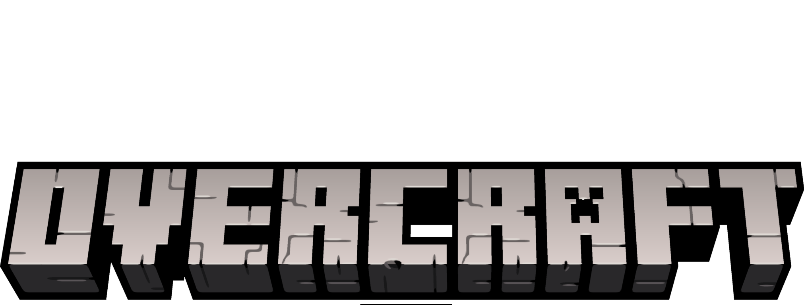

¿Qué és Overcraft?
Overcraft es un reino de Minecraft donde la paz y la tranquilidad reinan, mientras los jugadores exploran su vasto territorio. En el ocurren sucesos inexplicables, hay maravillas ocultas. La primera edición fue celebrada El 23 de marzo de 2023. Este 2024 se celebrará su comienzo el día 8 de marzo. ¿Serás el afortunado de entrar en el reino?